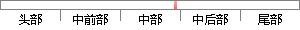

从技术上看，电子货币是一串数字签名：所有者对前一次交易记录和下一位所有者的公钥合起来进行签署生成的一个随机散列。
片段位置图

相似结果|
相似片段 1：用户进行支付的过程。一枚电子货币是这样的一串数字签名：每一位所有者通过对前一次交易和下一位拥有者的公钥签署一个随机散列的数字签名，并将这个签名附加在这枚电子货币的末尾，电子货①Nakamoto
相似片段 2：交易支付机制按照中本聪论文中的叙述，一枚电子货币（an electronic coin）是这样的一串数字签名：每一位所有者通过对前一次交易和下一位拥有者的公钥(Public key) 签署一个随机散列
相似片段 3：每二位所有者通过对前一次交易和下一位拥有者的公钥(Public k曲)签署一个随机散列的数字签名．并将这个签名附加在这枚电子货币的末尾。电子货币就发送给了下一位所有者。而收款人通过对签名进行检验
相似片段 4：}t国美术学院一跨媒体艺术学院一刘炯一作为媒介的钱6．8．1、附录：链2．交易我m、：定义，一枚电子货币是一串数字签名l链|：每一位所有者通过对前一次交易和下一位拥有者的公钥签署一个哈希的数字签名
|
※ 片段修改建议 ※
近似词参考：- 货币：货泉 钱币 钱银 泉币
- 交易：买卖 生意业务
- 记录：记实 纪录 记载
- 一位：一名
- 进行：举行
- 签署：签订
- 生成：天生
系统自动生成语句： 从技术上看，电子货泉是一串数字签名：所有者对前一次买卖记实和下一名所有者的公钥合起来举行签订天生的一个随机散列。
注：本片段修改建议为系统自动生成，仅供参考。